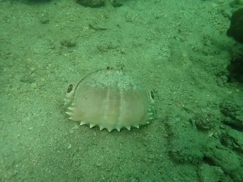

甲壳动物 · 动物界
馒头蟹 Calappa philargius

头胸甲圆鼓如馒头的大型蟹类，螯足扁平如铲，遇到危险时把身体缩成一团，生活在浅海沙泥底，肉可食用。
- 分类
- 门节肢动物门纲软甲纲目十足目科馒头蟹科属馒头蟹属
- 栖息环境
- 潮下带至水深数十米的浅海沙泥底，白天埋沙
- 地理分布
- 中国东南沿海、日本和东南亚海域
- 保护级别
- IUCN 暂无评估；中国未列入国家重点保护名录
物种志
馒头蟹头胸甲宽 8–12 cm，圆鼓隆起，形似馒头，体色黄褐或橙红，表面有斑点；螯足扁平宽大，内缘有锯齿，像一把铲子；步足较短，腹部退化紧贴头胸甲下方。
它分布于中国东南沿海、日本和东南亚的浅海沙泥底，栖息于潮下带至水深数十米处，白天埋在沙中，夜间出来捕食贝类、螺类和底栖小动物。馒头蟹遇到危险时会把身体缩成一团，用宽大的螯足护住头胸部，外形更像一块石头。它靠螯足撬开贝壳取食，是沿海常见的底栖蟹类，可食用但产量不大，甲壳坚硬，能抵御小型捕食者。目前 IUCN 暂无评估；中国未列入国家重点保护名录。
形态与习性
- 食性捕食贝类、螺类和底栖小动物
- 体型头胸甲宽 8–12 cm
- 识别头胸甲圆鼓如馒头，螯足扁平如铲
- 习性白天埋在沙中，夜间活动
- 防御遇险时缩成一团，用螯足护住身体
- 经济可食用，多为副渔获物，产量不大
趣味知识
- 馒头蟹的头胸甲圆鼓鼓的，活像一只刚出锅的馒头。
- 它的螯足扁平得像铲子，能撬开贝壳取食里面的肉。
- 遇到危险时，它会缩成一团，用螯足把身体护得严严实实。